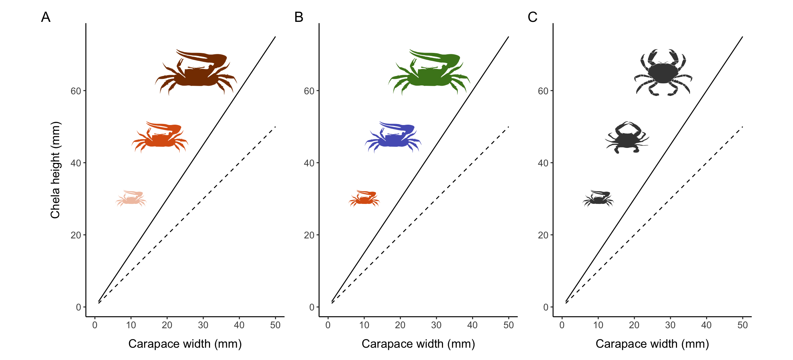
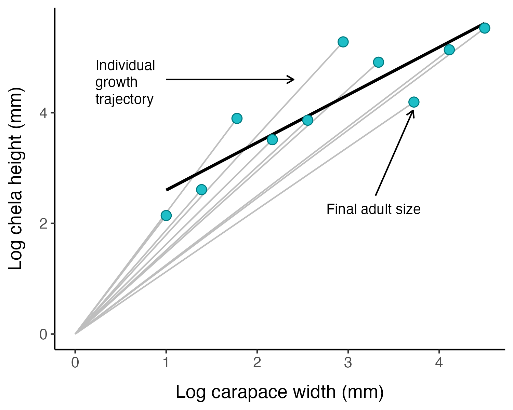
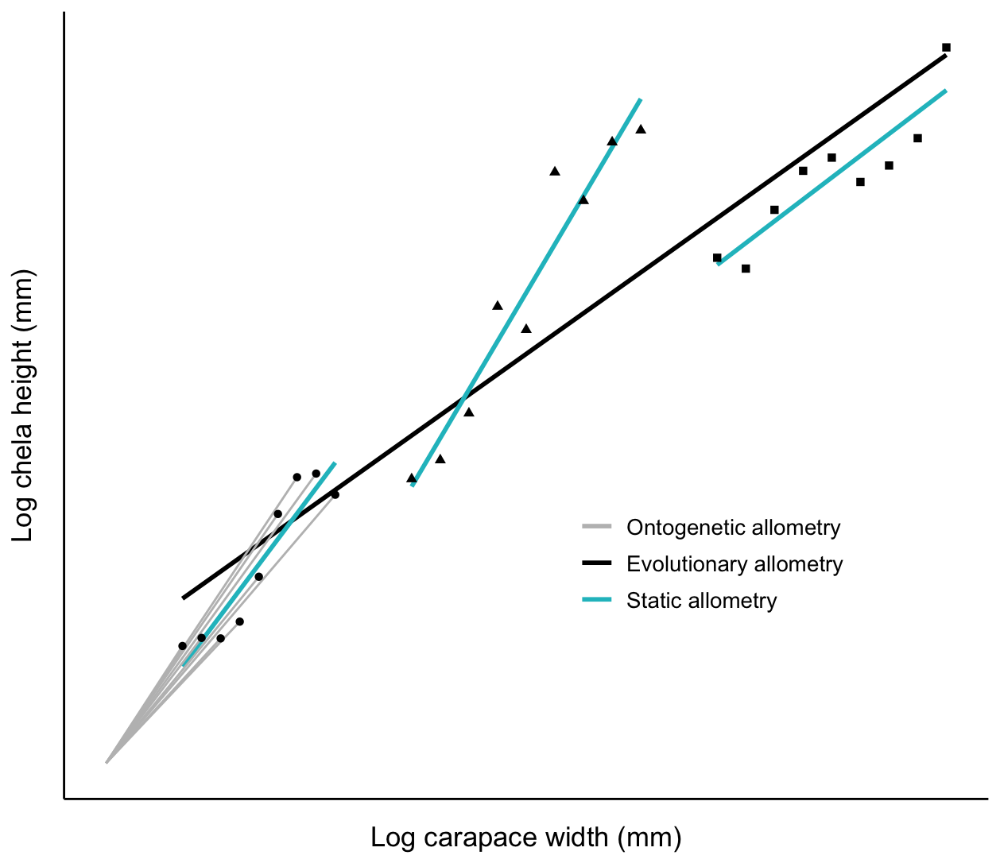
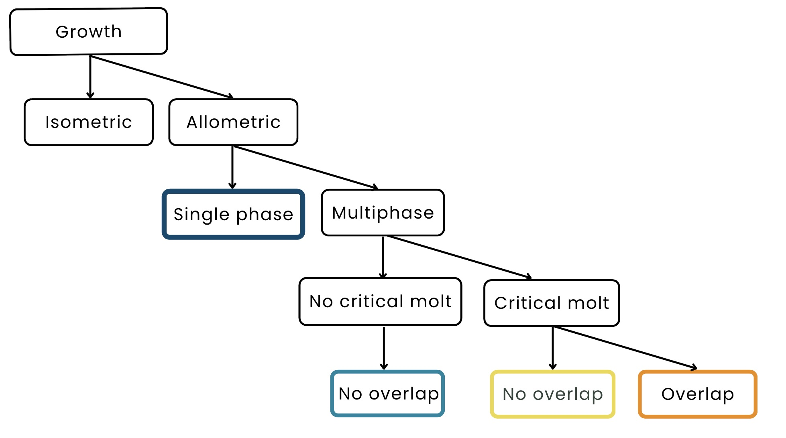
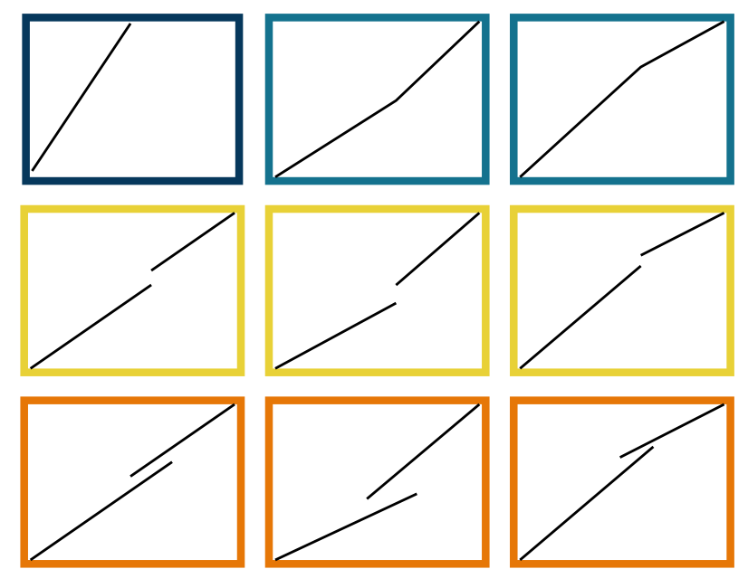

| Synthesis | Ch. 1 | A systematic review of the use of morphometric data to determine crustacean size at maturity |
| Synthesis | Ch. 2 | Ecological and evolutionary drivers of changes in crab (Brachyura) allometry at maturity |
| Quantitative methods | Ch. 3 | A guide to determining crustacean size at maturity from morphometric data (simulation testing) |
| Quantitative methods | Ch. 4 | morphmat: An R package to Model Size at Maturity Using Morphometric Data |
| Applications | Ch. 5 | Modeling spatial variation in Jonah crab size at maturity |
| Applications | Ch. 6 | TBD additional collaborations/applications. May be research output from PhD but not formally included in dissertation |
1 Overview & Background
1.1 Summary
Accurate estimates of size at maturity are crucial for the effective management of marine crustaceans, which represent the most valuable group of wild-capture fisheries by landed mass. Size at maturity values often influence the establishment of minimum landing sizes and represent crucial inputs in widely-used stock assessment models. For many crustaceans, size at maturity can be observed through changes in the relative size and growth of the chelae (males) or abdomen (females), referred to as a transition to morphometric maturity. Morphometric maturity is often a better indicator of functional maturity (i.e., the ability to successfully mate and produce offspring) than physiological maturity, which generally must be determined through gonad dissection or similarly invasive methods. Over the past century, various methods have been developed to estimate size at morphometric maturity for hundreds of crustacean species across the globe. Despite their widespread use, there has been limited research comparing the accuracy of these methods, and many researchers are unaware of more recently developed approaches to modeling size at maturity using morphometric data. My proposed thesis will address these gaps by comprehensively evaluating all documented approaches to modeling size at morphometric maturity and developing tools to facilitate the adoption of sound quantitative methods by fisheries scientists and managers.
1.2 Proposed Structure
I propose that my dissertation will contain at least five chapters, organized under three main headings: synthesis research (literature reviews and meta-analyses), quantitative methods (simulation testing and R package development), and applications to specific crustacean species (Table 1.1).
My proposed chapters are thematically connected and build upon one another in a natural progression. Chapter 1 will focus on identifying the modeling approaches (e.g., various types of piecewise regression and clustering) used to estimate size at maturity and will examine the context in which they are applied and the conclusions drawn from the given application. Chapter 2 will use the comprehensive dataset compiled in Chapter 1 to identify how changes in morphometry may be correlated with the life history traits, ecological niches, and evolutionary trajectories of different crustacean species. Chapter 3 will use simulation testing to evaluate the performance of the models identified in Chapter 1 when applied to artificial datasets with known size at maturity values. The simulation testing will allow me to determine how accurately each model can recover the true parameters when presented with realistic challenges like small sample sizes, underrepresentation of smaller individuals, and high variability/error in the data.
Chapter 4 describes an open-source R package I am developing that will contain easy-to-implement functions for researchers to implement the modeling approaches identified and tested in the previous chapters. Finally, the Applications section will demonstrate the value of this research by using the best practices I identify in Chapter 3 to model size at maturity for specific crustacean species. At a minimum, this will include a chapter modeling spatial variation in Jonah crab (Cancer borealis) size at maturity, illustrating how the workflows discussed under the Quantitative Methods heading can be extended to incorporate spatially-structured or time series data. However, I have identified numerous potential avenues to apply this work in collaboration with external researchers (Table 1.2), and undoubtedly more will arise over the course of my graduate studies.
| Topic | Potential collaborators |
|---|---|
| Identifying regenerating chelae when analyzing crustacean morphometrics | Jason Goldstein (Wells NERR, UNH), Joshua Carloni (NH F&G) |
| Climate impacts on size at morphometric maturity for Atlantic crustacean fisheries | Kathy Mills, Michelle Staudinger, Bernard Sainte-Marie |
| Informing Jonah crab and American lobster population models and stock assessments | Miguel Barajas, Jesica Waller, Everett Rzeszowski, Andrew Goode, Cameron Hodgdon |
| Morphometric vs. physiological maturity of the Chesapeake Bay blue crab | Zach Olsen (Texas PWD), VIMS/UMCES (Alexandra Schneider) |
Throughout this project, I will attempt to follow best practices and recommendations around open and reproducible science. This project will be directly aligned with the NOAA Fisheries Open Science Initiative and Open Science at NASA, supporting timely fulfillment of federal mandates from the NOAA Data Strategy, DOC Open Source Code Policy, Federal Data Strategy, and Federal Open Access Memo.
1.3 Morphometric Size at Maturity - Background
1.3.1 Types of Maturity
Crustaceans grow in a series of discrete steps by molting, a complex process controlled by the endocrine system during which the animal sheds its entire exoskeleton (ecdysis). Growth can typically be divided into two phases, immature and mature, each of which consists of a number of instars (molts) (McLay 2015). The immature and mature phases are often separated by a “puberty molt” that includes distinct morphological changes and after which the crustacean is sexually mature (Hartnoll 2001). There are several different types of sexual maturity in crustaceans (Box 1, reviewed in Waiho et al., 2017). There is widespread inconsistency in the terminology used to describe the different types of crustacean maturity, which in some instances has prevented accurate size-at-maturity estimates and inhibited effective fishery management (Waddy and Aiken 2005).
Female sexual maturity is often relatively easy to visually assess via the presence of embryos or eggs, the presence of sperm or sperm plugs in the seminal receptacle, differences in ovary color and size, and/or obvious changes in abdomen morphology. However, determining male maturity based on primary reproductive characteristics (e.g., examination of the vas deferens) can be more challenging. An increase in the relative size of the abdomen for females and the relative size of the claw for males when crustaceans reach sexual maturity has been recognized for over a century (Huxley 1924; Templeman 1935).
Morphometric maturity is preferable over physiological maturity for fisheries management purposes, because in many cases individuals may have mature gonads but are incapable of mating (are not “functionally mature”) because they have not developed the necessary secondary sexual characteristics. Functional maturity, the ability of an individual to successfully produce offspring, is the most directly related to the reproductive potential of a population and is therefore considered the most important for management purposes. To provide additional clarity, some authors refer to the transition to functional maturity as “onset of breeding” and restrict “onset of maturity” for references to the development of primary (physiological) or secondary (morphological) sexual characteristics (Montgomery 1992). Although both physiological and functional maturity are commonly used to estimate SM50, the criteria used to identify immature and mature reproductive phases often has a major impact on the estimated parameters (Reed et al. 2023).
The difference between physiological and morphometric maturity is perhaps most evident when considering the snow crab (Chionoecetes opilio), in which males mature in three stages: “immature” males lack spermatophores, “adolescent” males have spermatophores but undifferentiated chelae, and “mature” males have both spermatophores and differentiated chelae (Sainte-Marie, Raymond, and Brêthes 1995).
1.3.2 Types of Allometric Growth in Crustaceans
Much of the growth that occurs through molting is isometric, meaning that various parts of the body are increasing in size by the same amount and thus remaining proportionate. The disproportionate growth of body parts is called allometric growth and often occurs for secondary sexual characteristics, most notably for the chelipeds of male crustaceans and the abdomen of females. Although I will focus specifically on allometry (changes in relative size or growth), shape-based morphometry using morphological landmarks can similarly be used to identify the onset of sexual maturity in crustaceans (Collins, Giri, and Williner 2008).
There are three kinds of allometric growth: ontogenetic allometry, static allometry, and phylogenetic allometry (Figure 1.1) (Gould 1971). When \(x\) and \(y\) are traits measured in the same individual through developmental time, the relationship is called an ontogenetic allometry. When they are measured in different individuals at the same developmental stage within a population or species it is called static allometry.



Growth patterns often change upon reaching maturity due to increased energy allocation towards reproduction, meaning that biphasic growth models are more accurate than those that do not differentiate between pre- and post-maturation growth (Quince et al. 2008; Minte-Vera et al. 2016). Within the broad paradigm of crustacean growth, there exists a tremendous diversity of growth patterns. The first major factor distinguishing these growth scenarios is the presence or absence of a terminal molt. For species that exhibit indeterminate growth, molting continues until death, whereas determinate growth is said to occur when a crustacean enters “terminal anecdysis” after the last molt (often the puberty molt) and can no longer grow or repair bodily damage by molting. An extreme example of how growth changes at maturity can be found in crustacean species like the snow crab that have a terminal molt to maturity, meaning that growth ceases once an individual becomes mature (Conan and Comeau 1986).


References
Collins, Pablo A., Federico Giri, and Veronica Williner. 2008. “Sexual Maturity and Ontogenetic Shape Variations in the Freshwater Anomuran Crab, Aegla Uruguayana (Decapoda, Aeglidae).” Invertebrate Reproduction and Development 52 (1-2): 113–19. https://doi.org/10.1080/07924259.2008.9652278.
Conan, Gérard Y., and Michel Comeau. 1986. “Functional Maturity and Terminal Molt of Male Snow Crab, Chionoecetes Opilio.” Canadian Journal of Fisheries and Aquatic Sciences 43 (9): 1710–19. https://doi.org/10.1139/f86-214.
Gould, Stephen Jay. 1971. “Geometric Similarity in Allometric Growth: A Contribution to the Problem of Scaling in the Evolution of Size.” The American Naturalist 105 (942): 113–36. https://doi.org/10.1086/282710.
Hartnoll, Richard G. 2001. “Growth in Crustacea Twenty Years On.” In, edited by José P. M. Paula, Augusto A. V. Flores, and Charles H. J. M. Fransen, 111–22. Dordrecht: Springer Netherlands. https://doi.org/10.1023/A:1017597104367.
Huxley, Julian S. 1924. “Constant Differential Growth-Ratios and Their Significance.” Nature 114 (2877): 895–96. https://doi.org/10.1038/114895a0.
McLay, Colin L. 2015. “Moulting and Growth in Brachyura.” In, 9C-I:245–316. Treatise on Zoology - Anatomy, Taxonomy, Biology - the Crustacea. Brill. https://brill.com/edcollbook/title/19136.
Minte-Vera, Carolina V., Mark N. Maunder, John M. Casselman, and Steven E. Campana. 2016. “Growth Functions That Incorporate the Cost of Reproduction.” Fisheries Research, Growth: Theory, estimation, and application in fishery stock assessment models, 180 (August): 31–44. https://doi.org/10.1016/j.fishres.2015.10.023.
Montgomery, S. S. 1992. “Sizes at First Maturity and at Onset of Breeding in Female Jasus Verreauxi (Decapoda: Palinuridae) from New South Wales Waters, Australia.” Marine and Freshwater Research 43 (6): 1373–73. https://doi.org/10.1071/mf9921373.
Neiro, Jakke Sameli. n.d. “Ontogenetic and Static Allometry of Hind Femur Length in the Cricket Gryllus Bimaculatus (Orthoptera: Gryllidae) with Implications for Evo-Devo of Morphological Scaling.” https://doi.org/10.1101/2020.03.01.972141.
Quince, Christopher, Peter A. Abrams, Brian J. Shuter, and Nigel P. Lester. 2008. “Biphasic Growth in Fish i: Theoretical Foundations.” Journal of Theoretical Biology 254 (2): 197–206. https://doi.org/10.1016/j.jtbi.2008.05.029.
Reed, Erin M., Nancy J. Brown-Peterson, Edward E. DeMartini, and Allen H. Andrews. 2023. “Effects of Data Sources and Biological Criteria on Length-at-Maturity Estimates and Spawning Periodicity of the Commercially Important Hawaiian Snapper, Etelis Coruscans.” Frontiers in Marine Science 10 (March). https://doi.org/10.3389/fmars.2023.1102388.
Sainte-Marie, Bernard, Sylvain Raymond, and Jean-Claude Brêthes. 1995. “Growth and Maturation of the Benthic Stages of Male Snow Crab, Chionoecetes Opilio (Brachyura: Majidae).” Canadian Journal of Fisheries and Aquatic Sciences 52 (5): 903–24. https://doi.org/10.1139/f95-091.
Templeman, Wilfred. 1935. “Local Differences in the Body Proportions of the Lobster, Homarus Americanus.” Journal of the Biological Board of Canada 1 (3): 213–26. https://doi.org/10.1139/f35-006.
Waddy, S. L., and D. E. Aiken. 2005. “Impact of Invalid Biological Assumptions and Misapplication of Maturity Criteria on Size-at-Maturity Estimates for American Lobster.” Transactions of the American Fisheries Society 134 (5): 1075–90. https://doi.org/10.1577/T03-216.1.